Built for real-world conditions — mixed waste, partial visibility, inconsistent lighting. Where standard models fail, CIRCVIS delivers.
ResNet50, MobileNetV2 and EfficientNetB0 fused through soft voting for unmatched accuracy across all waste types and conditions.
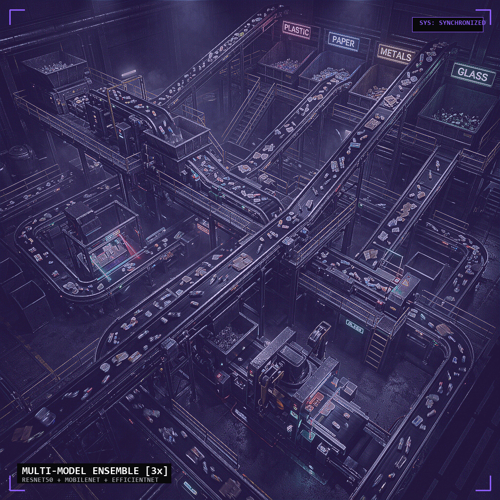
Optimized for robotics and field sensors. MobileNetV2 at 13MB runs on Raspberry Pi and Jetson Nano without compromise.
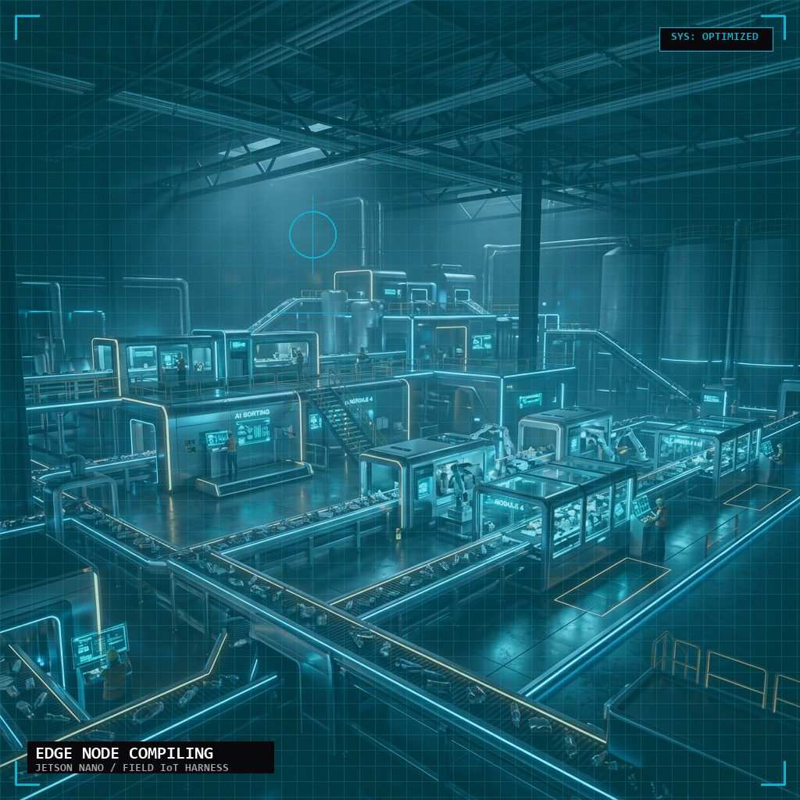
Comprehensive sustainability metrics dashboard with CO₂ savings calculations, recycling rates, and exportable compliance reports.
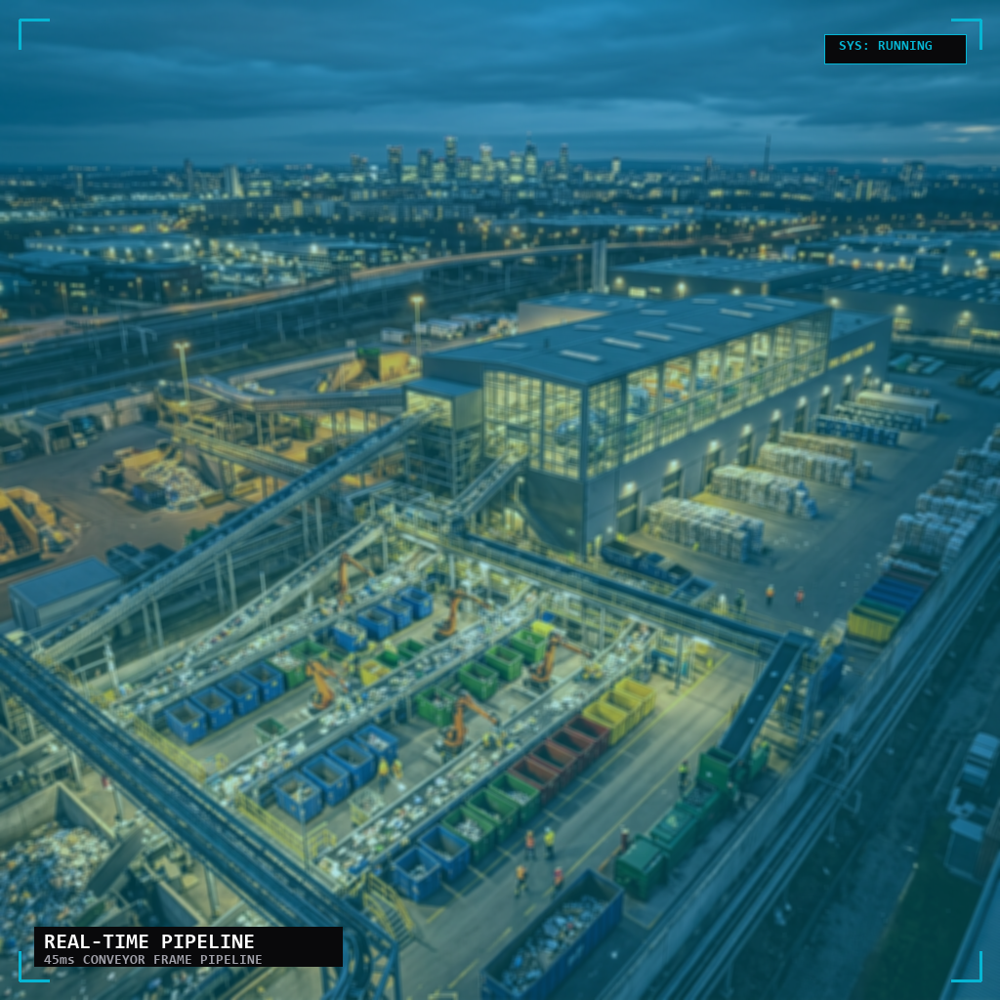
Image upload, live webcam feed, and video frame analysis with drag-and-drop simplicity and batch processing support.
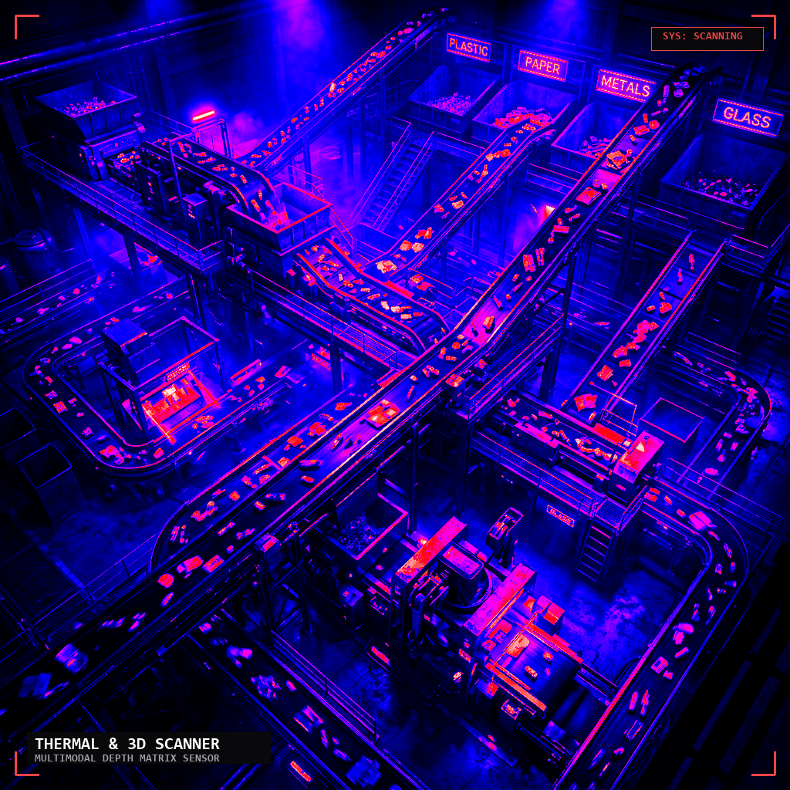
Measure real environmental impact. Every classified item contributes to your organization's ESG reporting and circular economy goals.
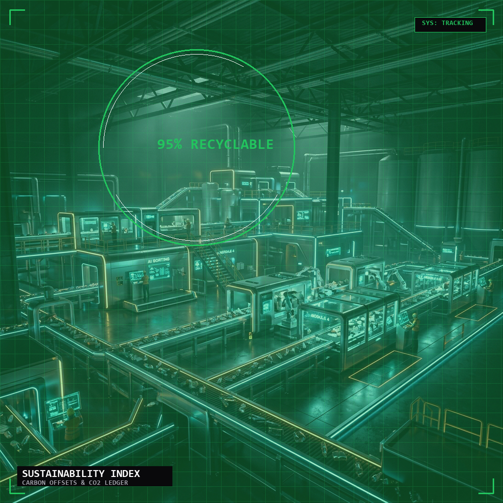
Bank-grade end-to-end encryption with on-premise deployment options. Your data never leaves your infrastructure unless you choose.
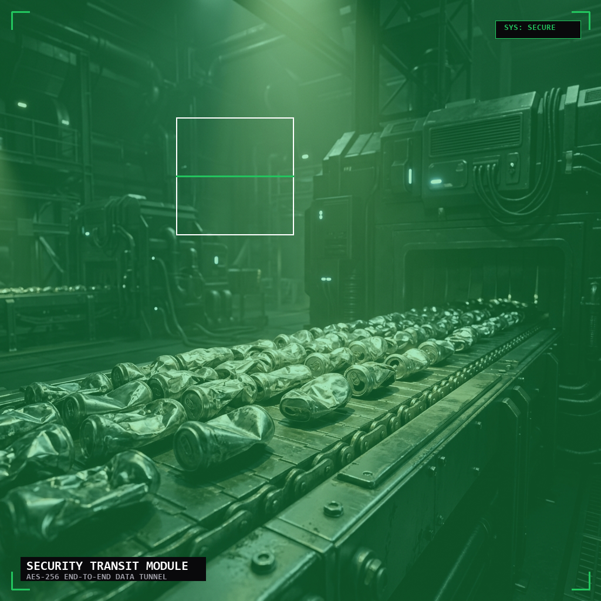
Each model optimized for a specific trade-off between accuracy, speed and hardware requirements.
| Model | Accuracy | Inference | Size | Best For |
|---|---|---|---|---|
| ResNet50 | 88% | 120ms | 97 MB | Accuracy-first server deployments |
| MobileNetV2 | 84% | 45ms | 13 MB | Edge devices and robotics |
| EfficientNetB0 | 87% | 65ms | 20 MB | Balanced cloud deployment |
| Ensemble (All 3) | 89% | 200ms | 130 MB | Maximum accuracy — production MRF |
Trained on 2.5 million real-world images from landfills and recycling facilities — not lab conditions.
PET, HDPE, PP, PVC bottles, bags, film. 95% recyclable. 500–1000 year decomposition.
3.5 kg CO₂/kg saved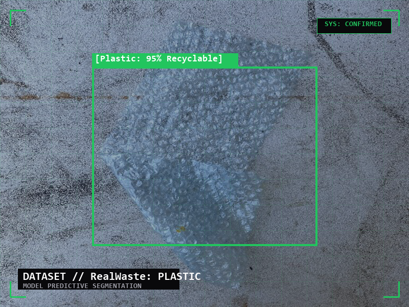
Food waste, garden waste, plant matter. 100% recyclable into biogas or compost.
Compostable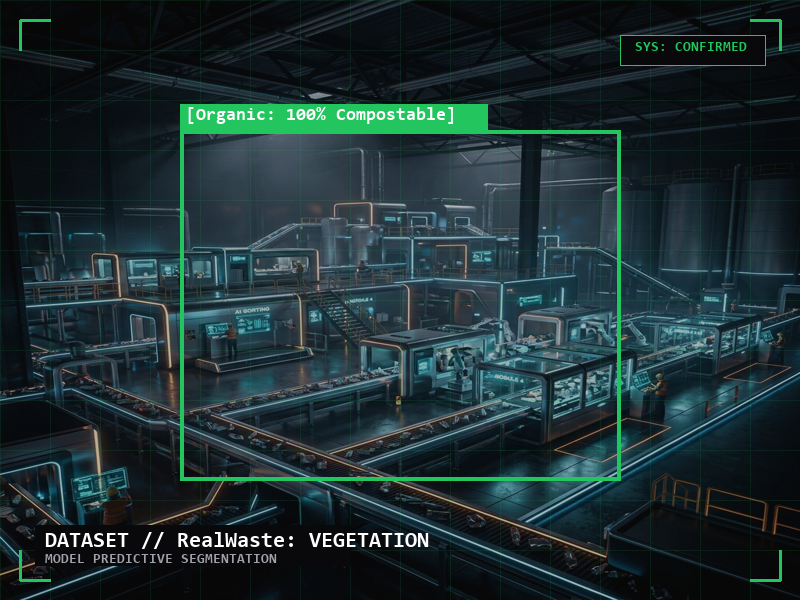
Aluminum, steel, copper, tin cans, foil. 100% recyclable with infinite reusability.
8.0 kg CO₂/kg saved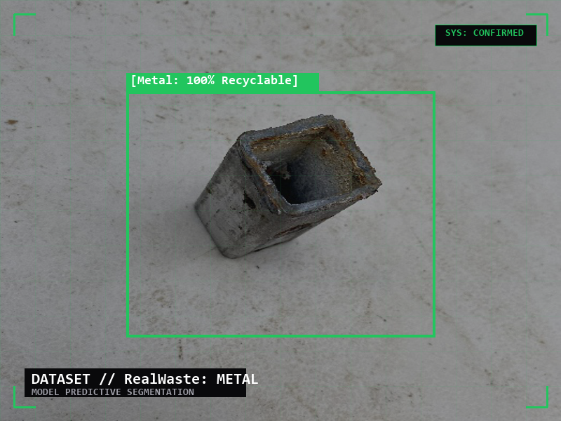
Newspapers, boxes, cardboard, envelopes. 98% recyclable via pulp regeneration.
1.5 kg CO₂/kg saved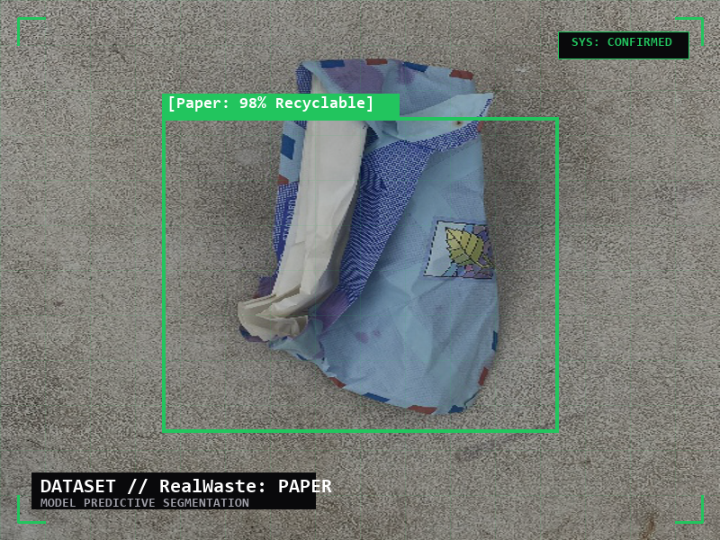
Clear, brown, green bottles and jars. 100% recyclable with infinite reuse cycles.
2.0 kg CO₂/kg saved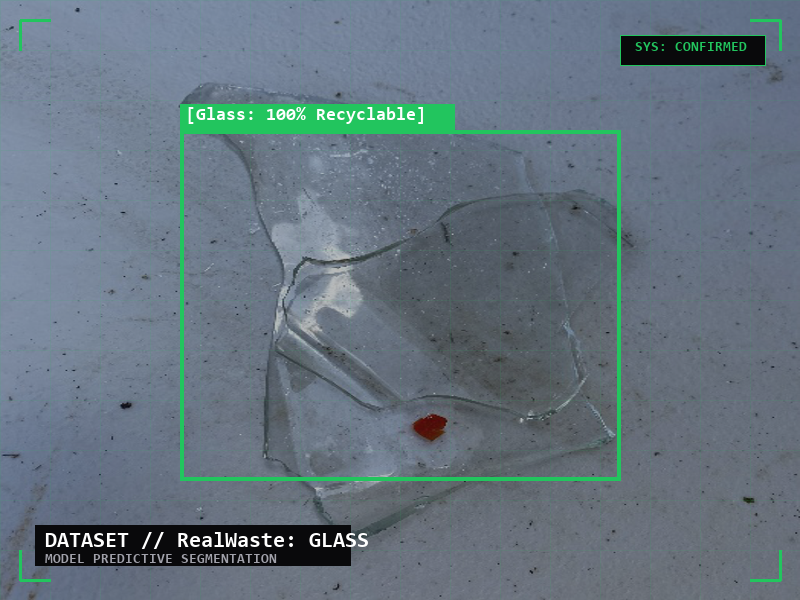
Cotton, polyester, wool clothing. 60% recyclable through fiber regeneration processes.
2.5 kg CO₂/kg saved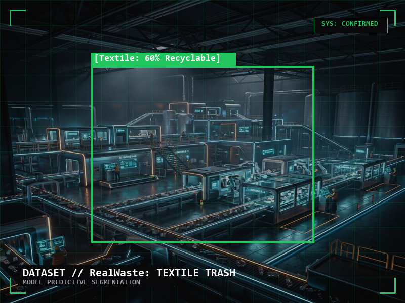
Join forward-thinking municipalities and facilities using CIRCVIS to drive measurable sustainability outcomes.